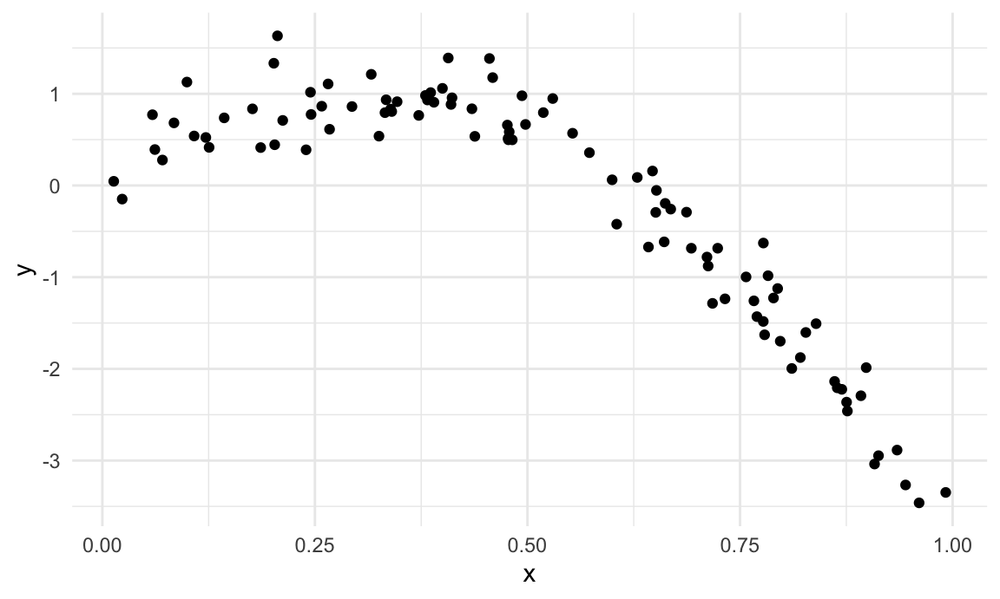
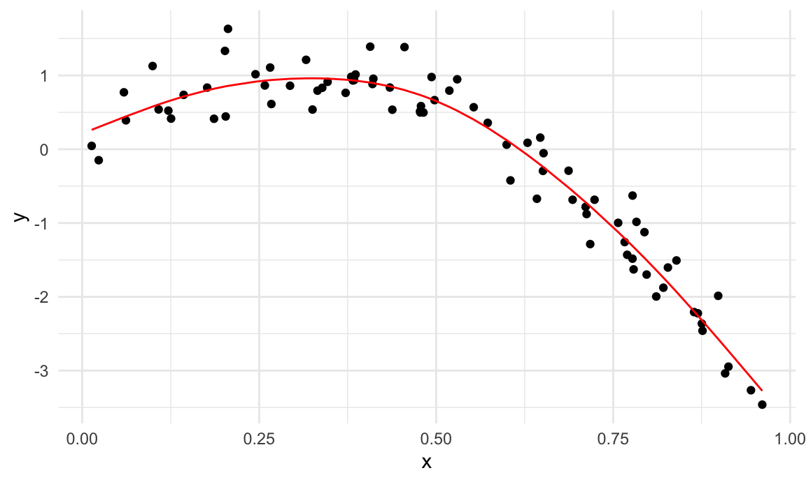
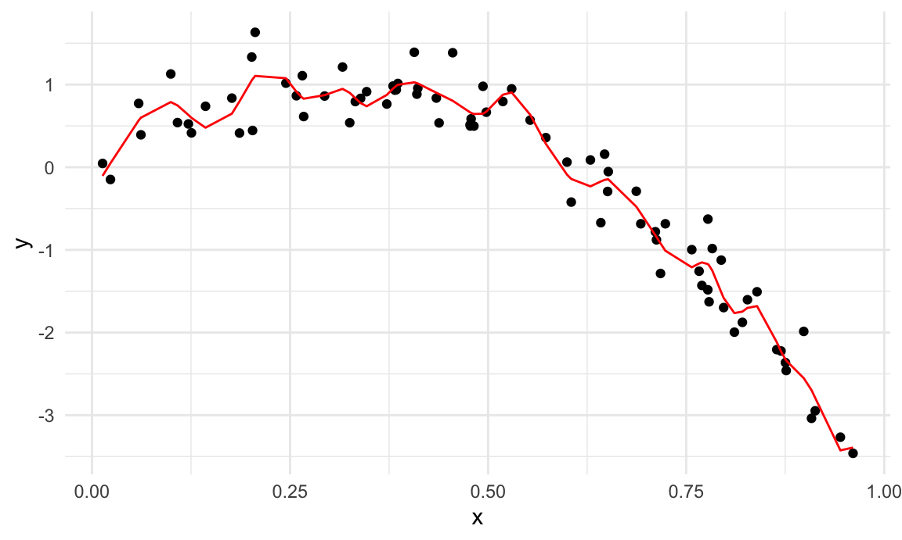
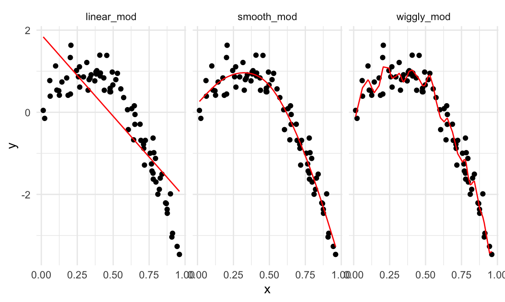
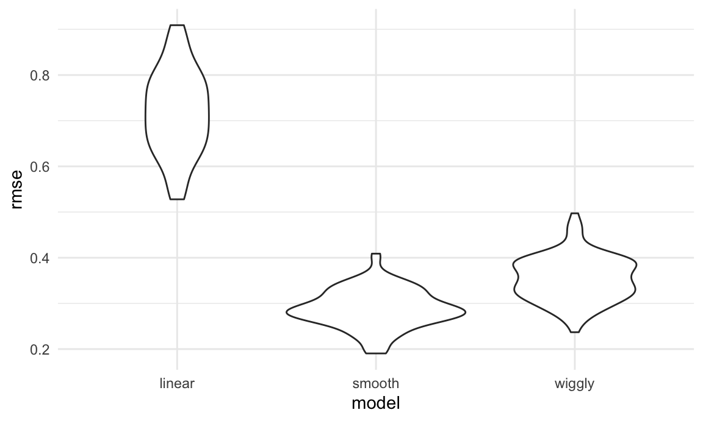
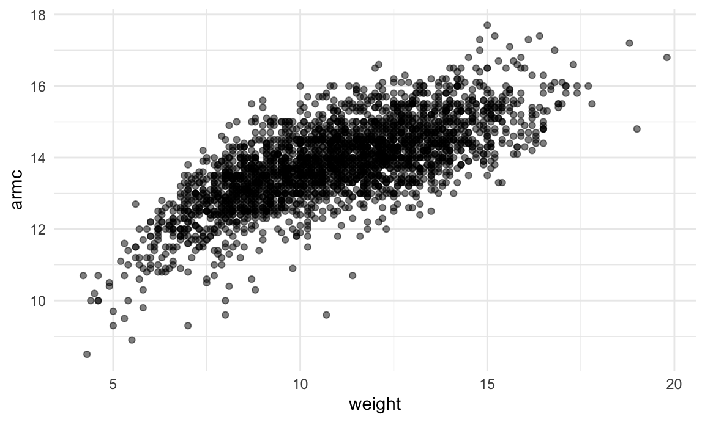
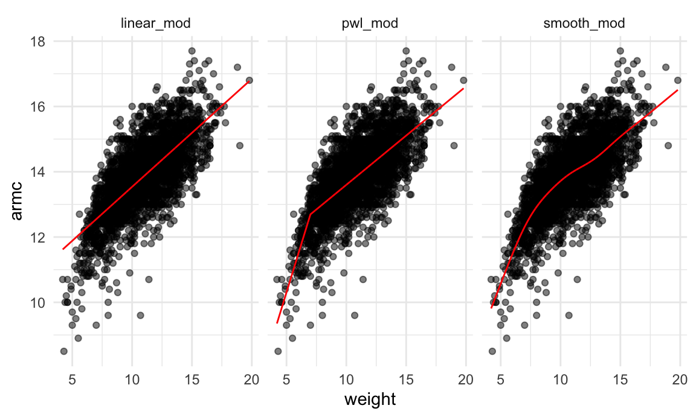

Cross Validation
Although hypothesis tests provide a way to compare nested linear models, in many situations the approaches under consideration don’t fit nicely in this paradigm. Indeed, for many modern tools and in many applications, the emphasis lies on prediction accuracy rather than on statistical significance. In these cases, cross validation provides a way to compare the predictive performance of competing methods.
This is the second module in the Linear Models topic.
Overview
Learning Objectives
Implement cross validation to assess the predictive value of a model using tools for iteration.
Video Lecture
Example
I’ll write code for today’s content in a new R Markdown document called cross_validation.Rmd in the linear_models directory / repo. The code chunk below loads the usual packages (plus mgcv) and sets a seed for reproducibility.
library(tidyverse)
library(modelr)
library(mgcv)## Loading required package: nlme##
## Attaching package: 'nlme'## The following object is masked from 'package:dplyr':
##
## collapse## This is mgcv 1.8-31. For overview type 'help("mgcv-package")'.set.seed(1)CV “by hand”
We’ll start with a simulated example. The code chunk below generates data under a non-linear model; I like to use this setting because “model complexity” is easiest for me to understand when I can see it.
nonlin_df =
tibble(
id = 1:100,
x = runif(100, 0, 1),
y = 1 - 10 * (x - .3) ^ 2 + rnorm(100, 0, .3)
)
nonlin_df %>%
ggplot(aes(x = x, y = y)) +
geom_point()
I’ll split this data into training and test sets (using anti_join!!), and replot showing the split. Our goal will be to use the training data (in black) to build candidate models, and then see how those models predict in the testing data (in red).
train_df = sample_n(nonlin_df, 80)
test_df = anti_join(nonlin_df, train_df, by = "id")
ggplot(train_df, aes(x = x, y = y)) +
geom_point() +
geom_point(data = test_df, color = "red")
I’ll fit three three models to the training data. Throughout, I’m going to use mgcv::gam for non-linear models – this is my go-to package for “additive models”, and I much prefer it to e.g. polynomial models. For today, you don’t have to know what this means, how gam works, or why I prefer it – just know that we’re putting smooth lines through data clouds, and we can control how smooth we want the fit to be.
The three models below have very different levels of complexity and aren’t nested, so testing approaches for nested model don’t apply.
linear_mod = lm(y ~ x, data = train_df)
smooth_mod = mgcv::gam(y ~ s(x), data = train_df)
wiggly_mod = mgcv::gam(y ~ s(x, k = 30), sp = 10e-6, data = train_df)To understand what these models have done, I’ll plot the two gam fits.
train_df %>%
add_predictions(smooth_mod) %>%
ggplot(aes(x = x, y = y)) + geom_point() +
geom_line(aes(y = pred), color = "red")
train_df %>%
add_predictions(wiggly_mod) %>%
ggplot(aes(x = x, y = y)) + geom_point() +
geom_line(aes(y = pred), color = "red")
In a case like this, I can also use the handy modelr::gather_predictions function – this is, essentially, a short way of adding predictions for several models to a data frame and then “pivoting” so the result is a tidy, “long” dataset that’s easily plottable.
train_df %>%
gather_predictions(linear_mod, smooth_mod, wiggly_mod) %>%
mutate(model = fct_inorder(model)) %>%
ggplot(aes(x = x, y = y)) +
geom_point() +
geom_line(aes(y = pred), color = "red") +
facet_wrap(~model)
A quick visual inspection suggests that the linear model is too simple, the standard gam fit is pretty good, and the wiggly gam fit is too complex. Put differently, the linear model is too simple and, no matter what training data we use, will never capture the true relationship between variables – it will be consistently wrong due to its simplicity, and is therefore biased. The wiggly fit, on the other hand, is chasing data points and will change a lot from one training dataset to the the next – it will be consistently wrong due to its complexity, and is therefore highly variable. Both are bad!
As a next step in my CV procedure, I’ll compute root mean squared errors (RMSEs) for each model.
rmse(linear_mod, test_df)## [1] 0.7052956rmse(smooth_mod, test_df)## [1] 0.2221774rmse(wiggly_mod, test_df)## [1] 0.289051The modelr has other outcome measures – RMSE is the most common, but median absolute deviation is pretty common as well.
The RMSEs are suggestive that both nonlinear models work better than the linear model, and that the smooth fit is better than the wiggly fit. However, to get a sense of model stability we really need to iterate this whole process. Of course, this could be done using loops but that’s a hassle …
CV using modelr
Luckily, modelr has tools to automate elements of the CV process. In particular, crossv_mc preforms the training / testing split multiple times, a stores the datasets using list columns.
cv_df =
crossv_mc(nonlin_df, 100) crossv_mc tries to be smart about memory – rather than repeating the dataset a bunch of times, it saves the data once and stores the indexes for each training / testing split using a resample object. This can be coerced to a dataframe, and can often be treated exactly like a dataframe. However, it’s not compatible with gam, so we have to convert each training and testing dataset (and lose that nice memory-saving stuff in the process) using the code below. It’s worth noting, though, that if all the models you want to fit use lm, you can skip this.
cv_df %>% pull(train) %>% .[[1]] %>% as_tibble## # A tibble: 79 x 3
## id x y
## <int> <dbl> <dbl>
## 1 1 0.266 1.11
## 2 2 0.372 0.764
## 3 3 0.573 0.358
## 4 4 0.908 -3.04
## 5 6 0.898 -1.99
## 6 7 0.945 -3.27
## 7 8 0.661 -0.615
## 8 9 0.629 0.0878
## 9 10 0.0618 0.392
## 10 11 0.206 1.63
## # … with 69 more rowscv_df %>% pull(test) %>% .[[1]] %>% as_tibble## # A tibble: 21 x 3
## id x y
## <int> <dbl> <dbl>
## 1 5 0.202 1.33
## 2 12 0.177 0.836
## 3 19 0.380 0.982
## 4 22 0.212 0.710
## 5 28 0.382 0.932
## 6 31 0.482 0.498
## 7 37 0.794 -1.12
## 8 42 0.647 0.158
## 9 47 0.0233 -0.148
## 10 56 0.0995 1.13
## # … with 11 more rowscv_df =
cv_df %>%
mutate(
train = map(train, as_tibble),
test = map(test, as_tibble))I now have many training and testing datasets, and I’d like to fit my candidate models above and assess prediction accuracy as I did for the single training / testing split. To do this, I’ll fit models and obtain RMSEs using mutate + map & map2.
cv_df =
cv_df %>%
mutate(
linear_mod = map(train, ~lm(y ~ x, data = .x)),
smooth_mod = map(train, ~mgcv::gam(y ~ s(x), data = .x)),
wiggly_mod = map(train, ~gam(y ~ s(x, k = 30), sp = 10e-6, data = .x))) %>%
mutate(
rmse_linear = map2_dbl(linear_mod, test, ~rmse(model = .x, data = .y)),
rmse_smooth = map2_dbl(smooth_mod, test, ~rmse(model = .x, data = .y)),
rmse_wiggly = map2_dbl(wiggly_mod, test, ~rmse(model = .x, data = .y)))I’m mostly focused on RMSE as a way to compare these models, and the plot below shows the distribution of RMSE values for each candidate model.
cv_df %>%
select(starts_with("rmse")) %>%
pivot_longer(
everything(),
names_to = "model",
values_to = "rmse",
names_prefix = "rmse_") %>%
mutate(model = fct_inorder(model)) %>%
ggplot(aes(x = model, y = rmse)) + geom_violin()
Repeating the split is helpful – now we get a sense of variance in prediction error and can compare prediction error distributions across methods. The smooth fit is a clear winner!
It’s worth remembering, though, that this isn’t testing a null hypothesis and there aren’t p-values as a result.
Example: Child Growth
We’ll take a quick look at an example involving real data and more realistic candidate model. A cross-sectional study of Nepalese children was carried out to understand the relationships between various measures of growth, including weight and arm circumference. You can download the data here; the code chunk below imports the data and plots the variables we’ll focus on.
child_growth = read_csv("./data/nepalese_children.csv")## Parsed with column specification:
## cols(
## age = col_double(),
## sex = col_double(),
## weight = col_double(),
## height = col_double(),
## armc = col_double()
## )child_growth %>%
ggplot(aes(x = weight, y = armc)) +
geom_point(alpha = .5)
The plots suggests some non-linearity, especially at the low end of the weight distribution. We’ll try three models: a linear fit; a piecewise linear fit; and a smooth fit using gam. For the piecewise linear fit, we need to add a “change point term” to our dataframe. (Like additive models, for now it’s not critical that you understand everything about a piecewise linear fit – we’ll see a plot of the results soon, and the intuition from that is enough for our purposes.)
child_growth =
child_growth %>%
mutate(weight_cp = (weight > 7) * (weight - 7))The code chunk below fits each of the candidate models to the full dataset. The piecewise linear model is nested in the linear model and could be assessed using statistical significance, but the smooth model is not nested in anything else. (Also, comparing a piecewise model with a changepoint at 7 to a piecewise model with a changepoint at 8 would be a non-nested comparison…)
linear_mod = lm(armc ~ weight, data = child_growth)
pwl_mod = lm(armc ~ weight + weight_cp, data = child_growth)
smooth_mod = gam(armc ~ s(weight), data = child_growth)As before, I’ll plot the three models to get intuition for goodness of fit.
child_growth %>%
gather_predictions(linear_mod, pwl_mod, smooth_mod) %>%
mutate(model = fct_inorder(model)) %>%
ggplot(aes(x = weight, y = armc)) +
geom_point(alpha = .5) +
geom_line(aes(y = pred), color = "red") +
facet_grid(~model)
It’s not clear which is best – the linear model is maybe too simple, but the piecewise and non-linear models are pretty similar! Better check prediction errors using the same process as before – again, since I want to fit a gam model, I have to convert the resample objects produced by crossv_mc to dataframes, but wouldn’t have to do this if I only wanted to compare the linear and piecewise models.
cv_df =
crossv_mc(child_growth, 100) %>%
mutate(
train = map(train, as_tibble),
test = map(test, as_tibble))Next I’ll use mutate + map & map2 to fit models to training data and obtain corresponding RMSEs for the testing data.
cv_df =
cv_df %>%
mutate(
linear_mod = map(train, ~lm(armc ~ weight, data = .x)),
pwl_mod = map(train, ~lm(armc ~ weight + weight_cp, data = .x)),
smooth_mod = map(train, ~gam(armc ~ s(weight), data = as_tibble(.x)))) %>%
mutate(
rmse_linear = map2_dbl(linear_mod, test, ~rmse(model = .x, data = .y)),
rmse_pwl = map2_dbl(pwl_mod, test, ~rmse(model = .x, data = .y)),
rmse_smooth = map2_dbl(smooth_mod, test, ~rmse(model = .x, data = .y)))Finally, I’ll plot the prediction error distribution for each candidate model.
cv_df %>%
select(starts_with("rmse")) %>%
pivot_longer(
everything(),
names_to = "model",
values_to = "rmse",
names_prefix = "rmse_") %>%
mutate(model = fct_inorder(model)) %>%
ggplot(aes(x = model, y = rmse)) + geom_violin()
Based on these results, there’s clearly some improvement in predictive accuracy gained by allowing non-linearity – whether this is sufficient to justify a more complex model isn’t obvious, though. Among the non-linear models, the smooth fit from gam might be a bit better than the piecewise linear model. Which candidate model is best, though, depends a bit on the need to balance complexity with goodness of fit and interpretability. In the end, I’d probably go with the piecewise linear model – the non-linearity is clear enough that it should be accounted for, and the differences between the piecewise and gam fits are small enough that the easy interpretation of the piecewise model “wins”.
Other materials
Cross validation is important, but still a bit new to the tidyverse. Some helpful posts are available, though, including:
- This post has a pretty detailed analysis of K fold CV
- This is a shorter, somewhat more dated example
The Introduction to Statistical Learning with R isn’t free online, but if you can track it down Chapter 5 has some useful material as well.
The code that I produced working examples in lecture is here.